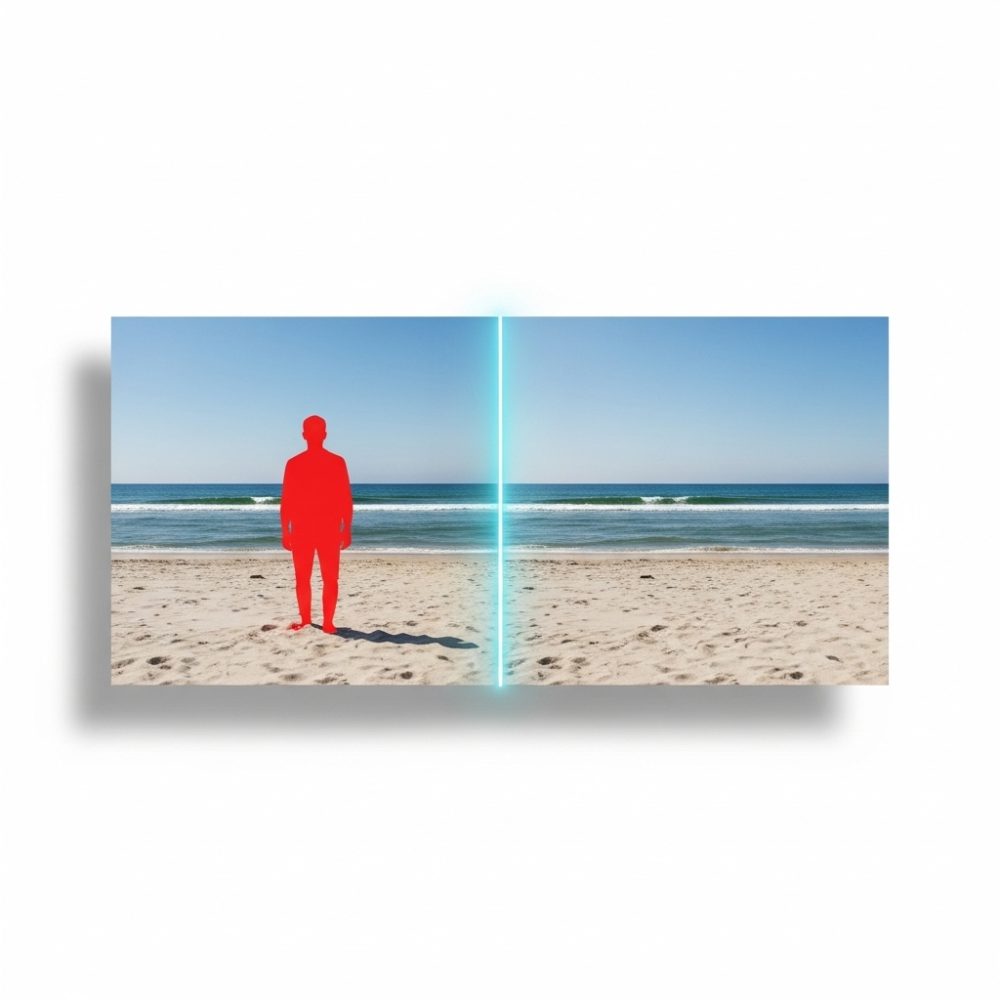
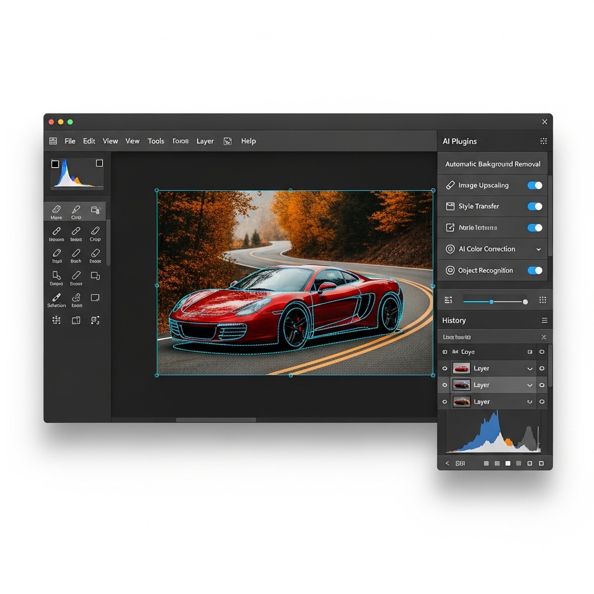

Session 4 — Professional AI photo editing using GIMP + Intel OpenVINO. Object removal, super resolution, generative fill. 100% free.
Adobe, Canva, and every creative AI tool charges monthly subscriptions. Your photos go to their cloud. Your wallet feels the burn.
GIMP is the world's most popular free image editor. Intel OpenVINO brings AI models to run locally on your hardware.
// The free AI editing stack Layer 1: GIMP (Image Editor) ├── Selection tools, Layers, Masks ├── Brushes, Filters, Transforms └── Plugin architecture Layer 2: OpenVINO AI Plugin ├── Stable Diffusion (Inpaint/Generate) ├── Super Resolution (Upscale) └── Semantic Segmentation Layer 3: Intel AI PC Hardware ├── GPU acceleration └── NPU for AI inference
Everything Adobe charges ₹24,000/yr for — you get free, local, private.
Select unwanted people/objects. AI fills the area naturally with matching context — like magic.
Upscale blurry, low-res images to HD quality. AI reconstructs missing details pixel by pixel.
Extend images, fill empty areas, or replace backgrounds. Powered by Stable Diffusion locally.
The AI looks at context pixels around the masked area and predicts what should fill the gap — understanding objects, not just textures.
Use GIMP's selection tool to highlight the area you want removed
The model reads context from neighboring pixels to understand the scene
Stable Diffusion generates new content that seamlessly blends in

GIMP's layer masks give you pixel-perfect control over what the AI sees and edits.
// GIMP workflow for AI editing Step 1: Open image in GIMP Step 2: Use Free Select (Lasso) tool to draw around the object Step 3: Go to menu: Layer → OpenVINO AI Plugins → Stable Diffusion → Inpaint Step 4: Set your prompt: "clean background, natural scenery, seamless blend" Step 5: Set Steps: 20-30 // More steps = better quality! Step 6: Click Generate → Done! ✨
The "Steps" setting controls how many times the AI refines the image. More refinements = more detail and accuracy.
Let's try all three AI features on real photos.
// Scenario 1: Object Removal Photo: Beach with random tourists Prompt: "clean beach, clear sand, ocean" Steps: 25 // Scenario 2: Super Resolution Photo: Old family photo (200×300px) Plugin: Super Resolution → 4x upscale Result: 800×1200px HD // Scenario 3: Generative Fill Photo: Product with plain background Prompt: "luxury marble surface, soft studio lighting, premium look" Steps: 30

Take any low-res image and upscale it 2x or 4x. The AI doesn't just stretch pixels — it reconstructs detail that wasn't there.
Old photo, tiny thumbnail, or pixelated screenshot
Select 2x or 4x upscale factor
Zoom in to see AI-reconstructed hair, eyes, textures
Professional AI photo editing — completely free, completely local, completely private.
AI inpainting removes anything seamlessly
4x upscale with AI-reconstructed detail
Extend and fill with Stable Diffusion
No Photoshop. No subscription. No cloud.